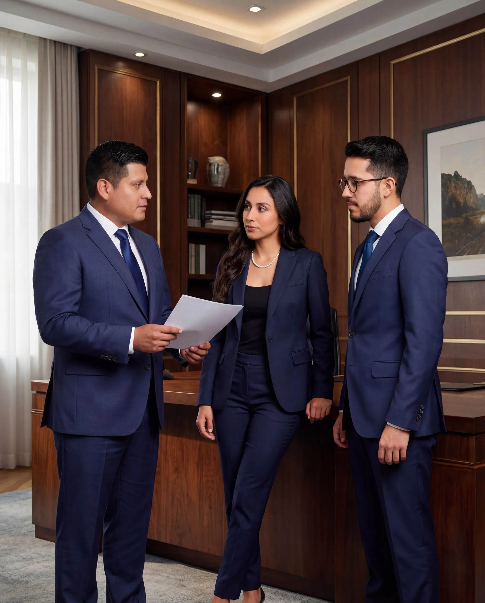

Somos VARGAS LAWYERS S.A.S., firma de abogados con cobertura directa en La Concordia. Asesoría legal honesta en Derecho Civil, Laboral, Tierras, Familia y Societario para personas y empresas del cantón.

Conozca por qué los habitantes del cantón La Concordia confían en VARGAS LAWYERS para resolver sus problemas legales
VARGAS LAWYERS S.A.S. es una firma de abogados con sede principal en Santo Domingo de los Tsáchilas y cobertura directa en La Concordia. Al estar ubicada en el mismo cantón que Santo Domingo, La Concordia es una de nuestras zonas de atención más cercanas — a solo 30 minutos de nuestra oficina principal.
El cantón La Concordia, con su importante actividad agrícola, palmicultora y comercial, genera una demanda constante de servicios legales especializados: desde la legalización de fincas y tierras hasta la defensa laboral de trabajadores agrícolas y la constitución de empresas para productores locales.
Como abogados con cobertura en La Concordia, comprendemos las necesidades jurídicas particulares del cantón. Las principales demandas legales de sus habitantes incluyen:
Trabajamos directamente con el Registro de la Propiedad de La Concordia, las notarías del cantón y los juzgados de la zona. Este conocimiento institucional nos permite agilizar sus trámites y anticipar los tiempos procesales reales, sin sorpresas.
También cubrimos cantones vecinos como El Carmen y Santo Domingo de los Tsáchilas, lo que nos permite coordinar trámites que involucren múltiples jurisdicciones.
A 30 minutos de La Concordia. Conocemos sus instituciones, notarías y registros. Gestionamos sus trámites sin que usted deba desplazarse.
Le decimos la verdad sobre su caso desde la primera consulta. No prometemos resultados imposibles ni le cobramos por casos inviables.
Consulta inicial por WhatsApp o videollamada. Seguimiento constante de su caso sin necesidad de desplazarse a nuestra oficina.
Soluciones jurídicas completas para personas y empresas del cantón
Legalización de tierras, adjudicaciones, posesión efectiva y escrituración en La Concordia y sus parroquias rurales.
Ver Derecho CivilDespidos intempestivos, liquidaciones y defensa de trabajadores agrícolas y comerciales en La Concordia.
Ver Derecho LaboralCobro de deudas, contratos incumplidos y litigio civil en los juzgados con jurisdicción en La Concordia.
Ver Derecho CivilDivorcios, pensiones alimenticias, tenencia y régimen de visitas para familias del cantón La Concordia.
Ver Derecho de FamiliaConstitución de compañías S.A.S. y asesoría empresarial para emprendedores y comerciantes de La Concordia.
Ver Derecho SocietarioAcciones de protección, hábeas corpus y garantías constitucionales para habitantes de La Concordia.
Ver ConstitucionalTodo lo que necesita saber sobre servicios legales en La Concordia, Ecuador
Sí. VARGAS LAWYERS S.A.S. brinda cobertura legal directa en La Concordia. Atendemos por WhatsApp y videollamada, y coordinamos visitas presenciales cuando el trámite lo requiere. Cubrimos civil, laboral, familia, tierras, societario y constitucional.
En La Concordia los más solicitados son: legalización de tierras y fincas, cobro judicial de deudas, divorcios y pensiones alimenticias, constitución de empresas SAS para comerciantes y productores agrícolas, y defensa en despidos intempestivos.
No. La consulta inicial se hace por WhatsApp o videollamada. Para trámites presenciales nos trasladamos a La Concordia o le recibimos en nuestra oficina de Santo Domingo, a solo 30 minutos de distancia. Gestionamos directamente en el Registro de la Propiedad y juzgados del cantón.
Los honorarios varían según el tipo y complejidad del caso. En VARGAS LAWYERS trabajamos con tarifas justas y transparentes. Le ofrecemos un diagnóstico inicial para que conozca el costo real antes de comprometerse. Contáctenos por WhatsApp al +593 98 589 9525.
Sí. Tenemos experiencia en legalización de tierras, adjudicaciones, posesión efectiva y escrituración en el cantón La Concordia, incluyendo sus parroquias rurales como Monterrey, La Villegas y Plan Piloto.
Agenda su consulta con nuestro equipo legal. Primera orientación sin compromiso. Atendemos de lunes a viernes de 09:00 a 18:00. Consulta inicial por WhatsApp o videollamada.
📍 Sede principal: Av. Abraham Calazacón S/N y Los Orquídeas · Santo Domingo de los Colorados, Ecuador